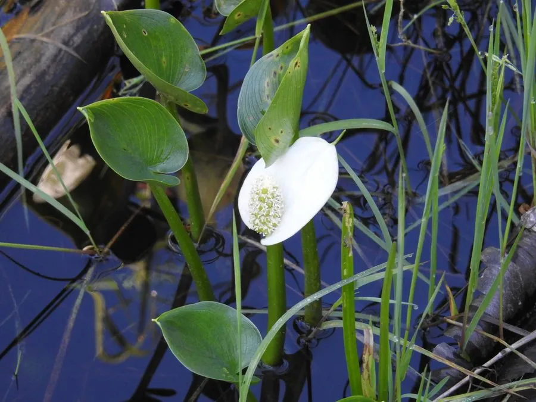

水生植物 · 植物界
水芋 Calla palustris

天南星科水芋属多年生水生草本，叶片心形、佛焰苞白色，生于北方沼泽池塘，全株有毒，是湿地观赏植物。
- 分类
- 门被子植物门纲单子叶植物纲目泽泻目科天南星科属水芋属
- 栖息环境
- 北方沼泽、池塘和溪流边的浅水与湿泥地
- 地理分布
- 北半球温带，中国东北、华北及西南山区
- 保护级别
- 暂无评估
物种志
水芋为天南星科水芋属的多年生水生草本，根状茎横生，茎短。叶片心形或箭形，长 10–20 厘米，叶柄长，生于水边或浅水中。花序为肉穗花序，佛焰苞白色，长 3–5 厘米，花期夏季；果实为浆果，红色。
水芋分布于北半球温带的沼泽、池塘和溪流边，中国东北、华北等地有分布，喜凉爽、湿润和半阴环境，耐寒性强。它叶片心形、佛焰苞白色，是湿地水景的观赏植物；但全株含草酸钙针晶，有毒，误食会引起口腔和咽喉肿痛。栽培以根状茎分株繁殖为主，需保持浅水和湿润土壤；园林应用中应设置警示，避免儿童和宠物误食。
形态与习性
- 株高20–40 厘米
- 叶片心形或箭形，长 10–20 厘米
- 花期夏季，佛焰苞白色
- 水深浅水至湿泥地
- 光照喜半阴或明亮散射光
- 土壤富含腐殖质的湿泥
- 繁殖根状茎分株
- 注意全株有毒，误食会引起肿痛
趣味知识
- 水芋的佛焰苞白色，形似马蹄莲，但两者并非同属。
- 水芋全株含草酸钙针晶，有毒，误食会引起口腔肿痛。
- 它耐寒性强，能在北方湿地的冰水中越冬。